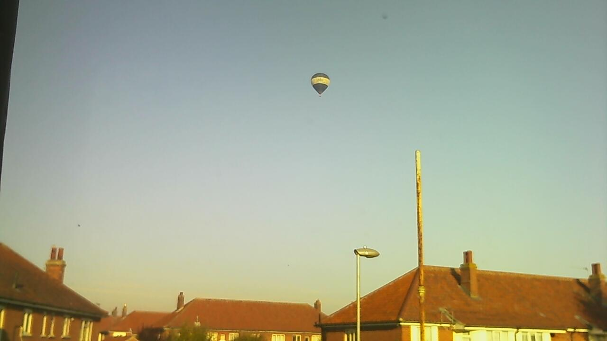

27th January 2017
27th January 2017
Timeline
Controls
Festplassen
Festplassen is the recreation area between Lille Lungegaardsvann, Rasmus Meyers Allé, Christies gate and Kaigaten. It is used for the May 17th celebration (since 1929), fun fairs, amusement parks, feast day and festivals.
Festplassen is the recreation area between Lille Lungegaardsvann, Rasmus Meyers Allé, Christies gate and Kaigaten. It is used for the May 17th celebration (since 1929), fun fairs, amusement parks, feast day and festivals.
Events